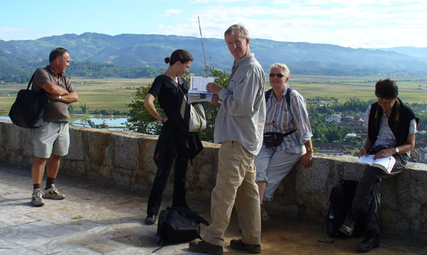

China Trav-E-Logs ©
China Exit 1 E-mail
November 15, 2005
Hi Folks,
Took the 5.5-hour bus trip from Jinghong (capital of Xishuanbanna) to Mengla, en route to the Laos border. It's therefore appropriate to reflect on the sights and people of Southern China.
While seeing Toni off at the airport last Saturday, I struck up a conversation with the Custom's Official. He was probably the most fluent Chinese speaker of English encountered on the trip, so I leaped at the opportunity to ask questions about life in China.
After studying English in a college in Kunming, Yunnan Province, he taught English in that school system. Deciding that was not what he wanted to do with the rest of his life, he quit and took a job as a tour guide in Jinghong, closer to his home town. Then he owned a restaurant for less than a year, before finally settling down as a customs official. (Under present rules, that will permit him to retire before the age of 60.)
The Jinghong area has four or five large rubber tree plantations owned by the State, but the rest of the acreage planted in rubber trees is under private ownership.
Private ownership? If a (Chinese) person buys a parcel of land in the country, can he do anything he wants with it? Build a home? Apartment? Factory? "All yes, but in the later case, the regional environmental board must approve." If the type of factory has the potential to pollute the air and damage local crops, it may not be permitted.
Spoke with an Italian that is working in Beijing with the EU environmental overseer organization. She related that Beijing had just forced a work stoppage on construction of 10 to 12 power generation plants (which are desperately needed) because the proper permits were not obtained. This case will be most interesting to follow, as it will be a litmus test for the government's resolve to become environmentally friendly.
Lower photo shows loose-knit group of Westerners taking a break at the temple on a hillside above the Market at Menghun.
Hope all's well! Keep the email coming, but if you press "REPLY", please strip my photos and text out of the response.
Bill
| next:China Exit2 |
| back: Dali | ||
| Bamboo Homes in S.E. Asia |